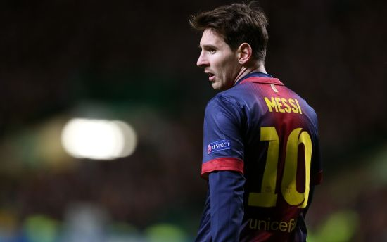
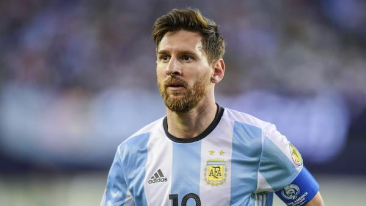

名记称梅西愿降薪一半!实际是分期付款躲工资帽...
由于巴萨严重超过了西甲工资帽，红蓝军团不但无法注册四大新援，甚至无法与梅西完成续约。巴萨所能做的，就是尽量降低薪资支出，以保证达到工资帽要求。据《法国足球》记者托沙特透露，梅西已经同意降薪一半以上。但即便如此，巴萨仍然没能
查看更多
早上6点!巴萨收到坏消息,令梅西彻底无奈,离队概率越来越大
北京时间7月9日早上6点钟,法国记者Florent Torchut透露,梅西依旧是自由身,不过他想同巴萨续约,并且梅西愿意在薪资上做出极大的让步。据了解,梅西已经同意降薪一半以上,以此来让自己留在巴萨,继续为巴萨效力。 很明显,当梅西深知巴萨遭遇...
查看更多
5-0!“巴阿大战”引两国总统互相叫板,梅西受伤,26年魔咒难破
不过值得一提的是,巴西队的所有进球都是多点开花,而阿根廷队的11个进球之中,有9个是和梅西有关系的。所以,巴西队防守住梅西,基本就等同于扼住了阿根廷队的咽喉。 在进球时间上,巴西队上半场平均攻入1.4个进球,阿根廷队为0.6球

西甲主席:巴黎或曼城签下梅西 那就是服经济兴奋剂
西甲主席特瓦斯表示,巴萨必须要遵循工资帽的规定,另一方面,如果大巴黎或者曼城签下梅西,那就等于是服用“经济兴奋剂”。 特瓦斯表示:“我和拉波尔塔关系很好,和西甲大部分俱乐部的主席一样。我们就梅西的情况谈过30秒。有一些规定必须要遵...